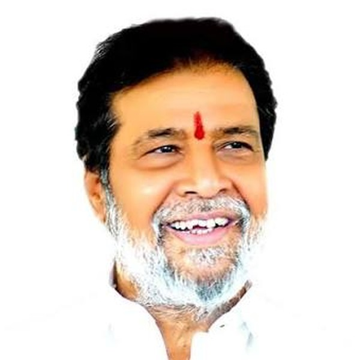
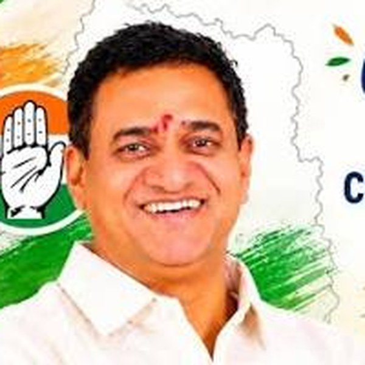
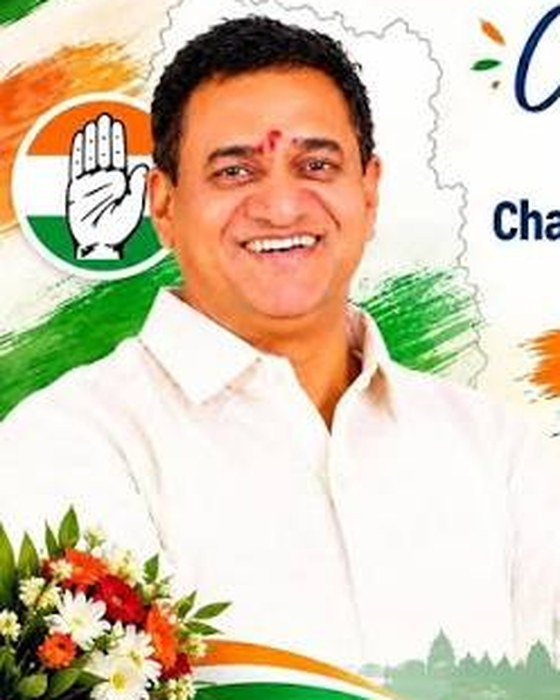

శ్రద్ధాంజలి
Our Guiding Light · మా మార్గదర్శి
స్వర్గీయ శ్రీ పట్లోళ్ల కిష్టా రెడ్డి గారు
02 Oct 1942 – 25 Aug 2015 · Former MLA, Narayankhed
“His dreams for Narayankhed are our mission. His values are our path.”
Indian National Congress · Telangana
పట్లోళ్ల చంద్రశేఖర్ రెడ్డి
President, District Congress Committee (DCC) — Sangareddy
“Service to people is the true service to the nation.”


About
Patlolla Chandrashekar Reddy comes from a family that has served the people of Narayankhed and the Sangareddy (erstwhile Medak) region for decades. Son of the late former MLA Patlolla Kishta Reddy and brother of Narayankhed MLA Patlolla Sanjeeva Reddy, he carries forward a legacy of Congress ideology, grassroots work and helping every family that knocks on the door.
Appointed by the AICC as President of the Sangareddy District Congress Committee, he works to strengthen the party from the village level upward, bring government welfare schemes to eligible families, and stand with people in times of need.
Family Legacy
Social Service
Some of the work carried out across Sangareddy district.
Gallery
Videos
Contact
For grievances, welfare scheme assistance, medical help or party work, contact the DCC office. Every request is heard.